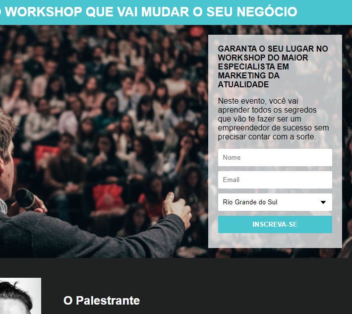
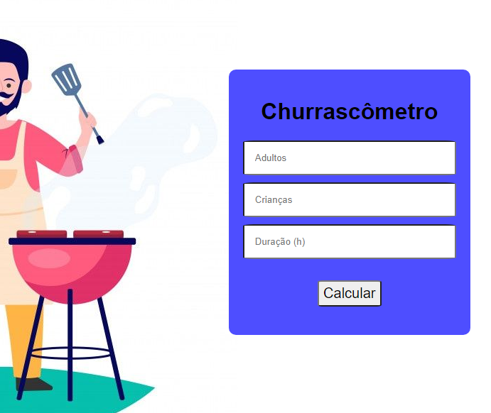

Workshop Capture Page

A simple capture page that contains event
and representative information, registration
via email, developed with HTML 5 and CSS 3.
Churrascômetro

Churrascômetro project developed
in HTML 5, CSS 3 and JavaScript,
with which we can count meats per
person and even drinks at a barbecue.